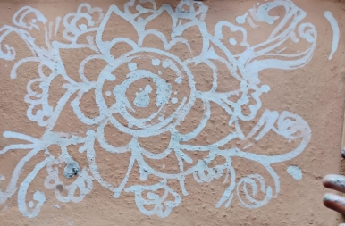
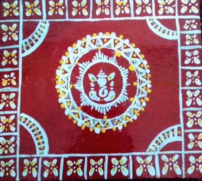
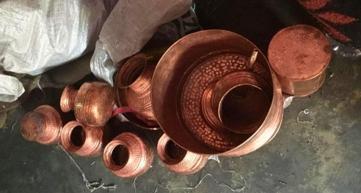
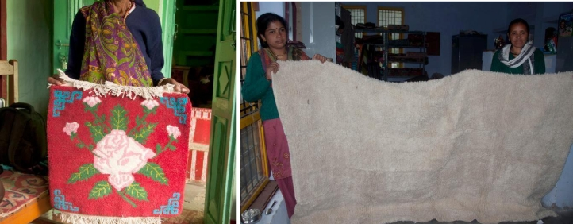
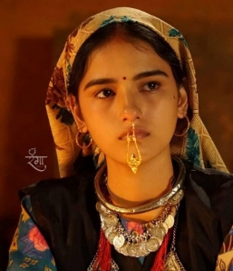
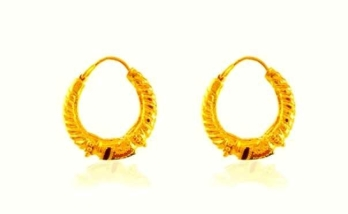
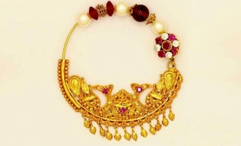
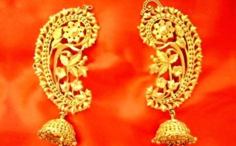
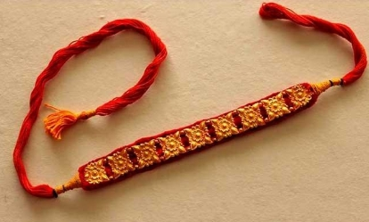
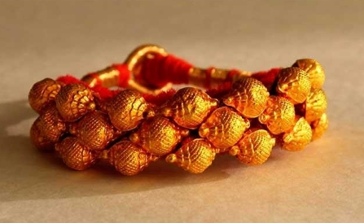

.jpeg)
Introduction
In the quiet Himalayas, every handmade thing has its own story. These are not just crafts—they are the memories made with care, faith, and old ways. These are the legacy of our old tradition, left for us by our great ancestors. Behind every bit of thread, carving, and color, there's a story whispered by the mountains and kept alive by the people who live there.
These stories tell us that craftsmanship is more than just skill—it's feeling, history, and a quiet way of talking that's been shared for years. In our blog today, we’ll look into five beautiful Pahadi handicrafts and their stories.
Aipan Art : Sacred Patterns of Kumaon
Aipan is the traditional art form of the Kumaon region of Uttarakhand. It is derived from “Arpan,” which means “likhai” or writing in English. It is mainly made during festivals, rituals, or special occasions and is believed to bring good fortune and blessings to the family.
Traditionally, it was made using ‘geru,’ which is red in color, and a paste of rice, also called ‘biswar.’ The geru is applied on the surface, and with biswar, beautiful geometric shapes, flowers, and designs symbolizing gods and goddesses are made. Nowadays, people use red and white paint to make the Aipan; to make it more attractive, yellow and other colors are also used. The art form originated in the Almora district and later on spread to other parts of the state.
The Aipan art form also received a Geographical Indication (GI) tag in September 2021. It will provide recognition and economic benefits to the traditional artisans and communities involved in creating the art, and also preserving and promoting the rich cultural heritage for future generations.
Ringal Craft : Bamboo Weaving of the Himalayas
Ringal craft is also one of the most beautiful crafts of the Himalayan region of Uttarakhand. It is an old bamboo weaving tradition, which uses Ringal, a special type of bamboo that is slightly thinner and more flexible, and grows in the upper altitudes of the state.
The artisans harvest Ringal, dry it, split it into thin, fine strips, and weave them into a strong, beautiful, useful, and long-lasting product. Through this, baskets, trays, storage boxes, tokris, and many other products are made.
 Source: Ringal (bamboo fiber weaving) : Decorhandcrafted
Source: Ringal (bamboo fiber weaving) : DecorhandcraftedRingal craft is a source of livelihood for many people living in the Himalayan villages; it not only promotes our culture but also provides sustainable income while keeping the environment unharmed.
- Next time if you visit the region, instead of plastic, choose sustainable products and buy the Ringal crafts; it will not only promote sustainability but also support the artisans who make these.
Tamta Copperware : The Metal Legacy of Almora
The Tamta copperware craft is another old tradition of the Pahadi region carried by the Tamta community in Almora. The word 'Tamta' itself refers to copper, which signifies craft embedded in their identity. When the skilled coppersmiths (tamtas) from Rajasthan were brought by the Chand dynasty of Kumaon to Almora, the craft further flourished here.
Source: Copperware of Almora losing sheen for TamtasThe crafting process involves heating copper sheets to make them soft and easy to give shape. Hammering the copper for a desired shape. Then, the different parts are joined using a mix of brass and zinc for a shiny finish, the final product is cleaned with an acid solution and then rubbed with tamarind to give a warm glow.
.jpeg)
Tamta craftsmen produce a variety of copper items like water pots (gagar), religious bowls (kundi), and musical instruments like the ransingha and dhol. The items are also highly valued for their health benefits. Due to high-tech machines, which make the copper products cheap, the families that are into this profession struggle to compete in the market. Tamta copperware is a tradition of skill, daily life, and rituals. Supporting this craft will help in preserving the legacy of our culture.
Thulma Blanket : Warmth Woven in the Mountains
Uttarakhand’s arts and crafts are of various kinds, each having a unique style, story, and identity. Out of these, one of the standout traditions is the Thulma blanket, woven in the Himalayan villages.
 Source : D'source Introduction | Punki and Thulma - DharamgharThese are high-quality blankets made using apparel-grade wool. They are soft and hairy in texture with vibrant colors and attractive motifs. Thulmas are initially woven using white or undyed wool and later dyed with different colors. The Thulma weaving tradition is not just a craft—it represents a deep cultural heritage of Uttarakhand and remains a vital source of livelihood for the weaving community.
Pahadi Handcrafted Jewellery : Identity Worn with Pride
The Pahadi handicrafts are empty without their charming jewelry. These are the vibrant expressions of the identity of the Pahadi people, their heritage, and their social ties. These are important in social and religious events.
- Bulak - it is a gold septum ornament worn by women in Jaunsar, Kumaon, and Garhwal. Handcrafted with delicate motifs.  Source: Pinterest
- Kundal and Bali - these are large gold earrings. They are widely worn in both silver and gold, with designs varying by region and status.  Source: Uttarakhand Traditional Jewellery - The Charm of Pahadi Women | My Gold
- Nath - Important part of the Pahadi tradition. Worn mostly by all married Pahadi women. Made with fine Kundan work and natural motifs.  Source: Uttarakhand Traditional Jewellery - The Charm of Pahadi Women | My Gold
- Kanphool - its literal meaning is "ear flower"; these are gold earrings covering a large part of the earlobe. These are part of the Jaunsari communities.  Source: Uttarakhand Traditional Jewellery - The Charm of Pahadi Women | My Gold
- Galobandh - It is a choker piece worn around the neck, made of gold squares and a red thread base. Worn by married women of the Kumaon, Garhwal, Jaunsar, and Bhotiya communities.  Source: Uttarakhand Traditional Jewellery - The Charm of Pahadi Women | My Gold
- Pahunchi: These are gold bangles that are deeply symbolic for married women in both Kumaon and Garhwal. They are made by embedding small gold beads on a red cloth and are mostly worn on special family occasions and ritual gatherings.  Source: Uttarakhand Traditional Jewellery - The Charm of Pahadi Women | My Gold
This jewelry tradition is deeply rooted in the social fabric of Uttarakhand. Pieces like the Nathuli (nath) are especially symbolic in marriage—both as a gift and a mark of status. Married women often wear Pahunchi and Gulobandh during sacred ceremonies and family events, reinforcing their social and cultural identity.
Conclusion
The handicrafts of Uttarakhand are more than just handcrafted items; they are timeless narratives. Every piece of jewelry worn by the women of Pahad with pride, every Aipan drawn at a doorstep, every Ringal basket crafted with care, every Thulma woven on a simple loom, and every copper pot hammered into shape all contain the essence and beauty of the mountains and the feelings of the people who make them.
These crafts are more than just customs; they are the source of livelihood for the people residing in the Himalayan region. They also serve as the link between generations; they connect the future, present, and past together. It is a symbol of their strength and a gentle reminder that culture survives as long as loving hands keep creating.
Preserving these Pahadi crafts is a means of honoring the people, stories, and legacy behind them. Also, in today's modern era, where most of the work is done by machines to save time, effort, and money, protecting the art and keeping it alive becomes more important.
By supporting local craftspeople, we are preserving a legacy that has shaped Pahadi culture for centuries rather than merely purchasing a product. To keep the mountains’ spirit alive for those who come after us, let’s keep these crafts close to our hearts, celebrate their beauty, and keep telling the stories they carry.